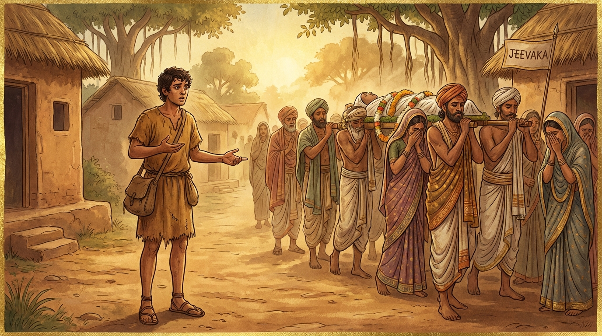

7. නාමසිද්ධි ජාතකය (97)
“ජීවකඤ්ච මතං දිස්වා” (ජීවකයා ද මළ බව දැක) යන මේ දේශනාව බුදුරජාණන් වහන්සේ ජේතවනාරාමයෙහි වැඩ වසන සමයෙහි, නාමයෙන් වැඩ කැමැති (සුබ නමක් බලාපොරොත්තු වන) එක් භික්ෂුවක් අරබයා වදාළ සේක. එක් කුල පුත්රයෙක් ‘පාපක’ නමින් හැඳින්විණි. ඔහු සසුනෙහි පැවිදි වූ පසු භික්ෂූන් විසින් “ඇවැත්නි පාපක, එන්න. ඇවැත්නි පාපක, සිටින්න” යැයි කියනු ලබන්නේ මෙසේ සිතුවේය: “ලෝකයෙහි ‘පාපක’ යන නම ලාමක වූවකි; කාලකණ්ණි වූවකි. මම වෙනත් මංගල සම්මත නමක් යොදා ගන්නෙමි.” ඔහු ආචාර්ය උපාධ්යායන් වහන්සේලා වෙත ගොස් “ස්වාමීනි, මගේ නම අවමංගල එකකි. මට වෙනත් නමක් තබනු මැනවැ”යි කීවේය. එවිට ඔවුහු ඔහුට මෙසේ කීවාහුය: “ඇවැත්නි, නමක් යනු හුදෙක් පැනවීමක් (හැඳින්වීමක්) පමණි. නමින් සිදුවන කිසිදු අර්ථ සිද්ධියක් නැත. තමන්ගේ නමින්ම සතුටු වන්න.” ඔහු නැවත නැවතත් එයම ඉල්ලුවේය. ඔහුගේ මේ නාමයෙන් වැඩ කැමැති ස්වභාවය භික්ෂු සංඝයා අතර ප්රකට විය. ඉක්බිති එක් දිනක් දම් සභාවෙහි රැස්ව හුන් භික්ෂූහු මේ කථාව ඉපදවූහ: “ඇවැත්නි, අසවල් භික්ෂුව නාමයෙන් වැඩ කැමැති අයෙකි; මංගල නාමයක් යොදා ගැනීමට කැමැති වේ.” එවිට බුදුරජාණන් වහන්සේ දම් සභාවට වැඩම කර, “මහණෙනි, කවර කථාවකින් යුතුව හුන්නාහු ද?” යි විචාරා, “මේ කථාවෙනැ”යි කී කල්හි, “මහණෙනි, ඔහු දැන් පමණක් නොව පෙරත් නාමයෙන් වැඩ කැමැත්තෙක්ම විය” යැයි වදාරා අතීත කථාව ගෙනහැර දැක්වූ සේක.
අතීතයෙහි තක්සලාවෙහි බෝසතාණන් වහන්සේ දිසාපාමොක් ඇදුරු වී පන්සියයක් මානවකයන්ට මන්ත්ර ඉගැන්වූහ. එහි එක් මානවකයෙක් නමින් ‘පාපක’ විය. ඔහු “එන්න පාපක, යන්න පාපක” යැයි කියනු ලබන්නේ මෙසේ සිතුවේය: “මගේ නම අසුබ එකකි. මම වෙනත් නමක් සාදා ගන්නෙමි.” ඔහු ආචාර්යවරයා වෙත එළැඹ, “ආචාර්යයෙනි, මගේ නම අසුබ එකකි. මට වෙනත් නමක් තබන්නැ”යි කීවේය. එවිට ආචාර්යවරයා ඔහුට මෙසේ කීවේය: “දරුව, යන්න. ජනපදයෙහි සංචාරය කර තමන්ට රුචි වූ එක් මංගල නාමයක් ගෙන එන්න. ඔබ පැමිණි විට ඒ නම වෙනස් කොට වෙනත් නමක් තබන්නෙමි.” ඔහු “යහපතැ”යි කියා මග වියදම් රැගෙන පිටත්ව, ගමින් ගම හැසිරෙමින් එක් නගරයකට පැමිණියේය. එහි ‘ජීවක’ නම් වූ එක් පුරුෂයෙක් මියගියේය. ඔහු නෑදෑයන් විසින් ඒ මෘත ශරීරය ආදාහනය කිරීමට ගෙන යනු දැක, “මේ පුරුෂයාගේ නම කුමක් ද?” යි ඇසුවේය. “මොහු ‘ජීවක’ නම් වේ” යයි කීහ. “ජීවකත් මැරෙයි ද?” “ජීවකයාත් මැරෙයි, අජීවකයාත් මැරෙයි. නම යනු හුදෙක් පැනවීමක් පමණි. ඔබ මෝඩයෙකැයි සිතමි.” ඔහු ඒ කථාව අසා නම ගැන මධ්යස්ථ වී (උදාසීන වී) නගරය තුළට පිවිසියේය.

ඉක්බිති කුලිය (ණය) දීමට නොහැකි වූ එක් දාසියක්, ස්වාමිවරුන් විසින් දොරටුවෙහි හිඳුවා කඹවලින් පහර දෙති. ඇගේ නම ද ‘ධනපාලී’ ය. ඔහු වීථිය මැදින් යන විට ඇයට තලනු දැක, “කුමක් නිසා ඇයට පහර දෙන්නේ දැ”යි විචාළේය. “ඇයට ණය (කුලිය) ගෙවීමට නොහැකි වී ඇත” යි කීහ. “ඇගේ නම කුමක් ද?” “ධනපාලී නම් වේ.” “නමින් ධනපාලී (ධනය රකින්නිය) වුවත් ණය ගෙවා ගැනීමට නොහැකි ද?” “ධනපාලියෝ ද අධනපාලියෝ ද (ධනය නැත්තෝ ද) දුප්පත් වෙති. නම යනු හුදෙක් පැනවීමක් පමණි. ඔබ වනාහි බාලයෙකැයි (මෝඩයෙකැයි) සිතමි.” ඔහු නම සම්බන්ධයෙන් වඩාත් මධ්යස්ථ වී, නුවරින් නික්ම මගට පිළිපන්නේ, අතරමග දී මංමුළා වූ පුරුෂයකු දැක, “එම්බා, ඔබ කුමක් කරමින් ඇවිදින්නේ දැ”යි විචාළේය. “ස්වාමීනි, මම මංමුළා වූයෙමි.” “ඔබේ නම කුමක් ද?” “පන්ථක (මගෙහි උපන් / මග දත්තා) නම් වේ.” “පන්ථකටත් මග වරදින්නේ ද?” “පන්ථක වුවත් අපන්ථක වුවත් මංමුළා වෙයි. නම යනු පැනවීමක් පමණි. ඔබ මෝඩයෙකැයි සිතමි.” ඔහු නම පිළිබඳව අතිශයින් මධ්යස්ථ වී බෝසතුන් වෙත ගොස්, “කුමක් ද දරුව, නමට රුචි වී ආවේ දැ”යි ඇසූ කල්හි මෙසේ කීවේය: “ආචාර්යයෙනි, ජීවකයෝත් මැරෙති; අජීවකයෝත් මැරෙති. ධනපාලියෝත් දුප්පත් වෙති; අධනපාලියෝත් දුප්පත් වෙති. පන්ථකයෝත් අපන්ථකයෝත් මංමුළා වෙති. නම යනු පැනවීමක් පමණි. නාමයෙන් සිදුවන කාර්ය සිද්ධියක් නැත; කර්මයෙන්ම සිද්ධිය වේ. මට වෙනත් නමකින් වැඩක් නැත. මගේ ඒ නමම මට වේවා!” බෝසතාණන් වහන්සේ ඔහු දුටු දේත් කළ දේත් සසඳා මේ ගාථාව වදාළහ.
“ජීවකයා ද මියගොස් සිටිනු දැක ද, ධනපාලී ද දුගී වී සිටිනු දැක ද, පන්ථකයා ද වනයෙහි මංමුළා වී සිටිනු දැක ද, පාපක නැවත පැමිණියේ ය.”
එහි ‘පුනරාගතො’ යන්නෙහි අර්ථය නම්, මේ කාරණා තුන දැක නැවත පැමිණි බවයි. මෙහි ‘ර’ කාරය සන්ධි වශයෙන් යෙදී ඇත.
බුදුරජාණන් වහන්සේ මේ ධර්ම දේශනාව ගෙනහැර දක්වා, “මහණෙනි, මොහු දැන් පමණක් නොව පෙරත් නාමයෙන් වැඩ කැමැත්තෙක්ම විය” යැයි වදාරා ජාතකය පූර්වාපර සන්ධි ගළපා නිම කළ සේක. “එකල නාමයෙන් වැඩ කැමැත්තා වූයේ දැන් සිටින මේ භික්ෂුවයි. ආචාර්ය පිරිස නම් බුදු පිරිස වූහ. එකල ආචාර්යවරයා වූයේ මම ම වෙමි.”
හත්වන නාමසිද්ධි ජාතක වර්ණනාවයි.